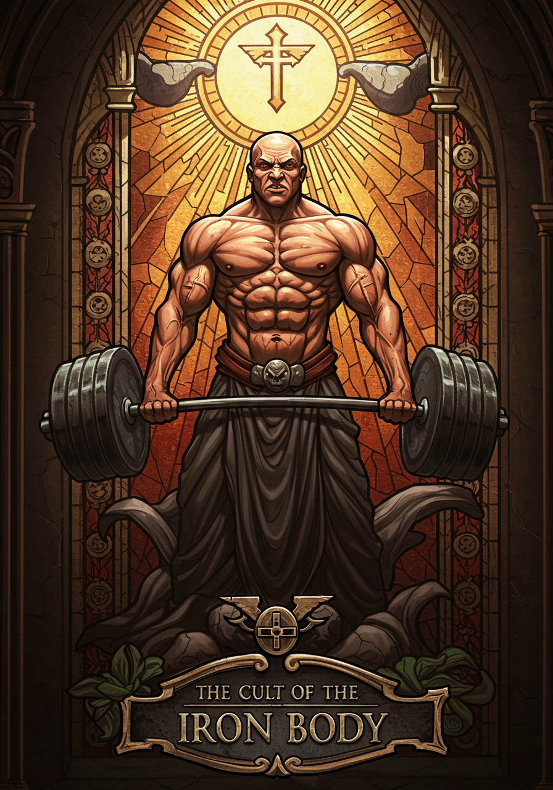

<!DOCTYPE html>
<html lang="en">
<head>
  <meta charset="UTF-8">
  <title>The First Book of Eman</title>
  <script src="https://code.jquery.com/jquery-3.6.0.min.js"></script>
  <script src="../turn.js"></script>
  <style>
    html, body {
	  overflow: hidden;
      margin: 0;
      padding: 0;
      background: #1a1a1a;
      font-family: 'Cinzel', serif;
      height: 100vh;
      display: flex;
      justify-content: center;
      align-items: center;
    }

	#book {
	  width: 800px;
	  height: 571px;
	  box-shadow: 0 0 40px rgba(0,0,0,0.6);
	}

	.page {
	  width: 400px;
	  height: 571px;
	  box-sizing: border-box;
	  background: linear-gradient(to bottom, #f2e4c2, #d2a679);
	  border: 1px solid #000;
	  font-size: 1em;
	  line-height: 1.8;
	  color: #3b1f0f;
	  display: flex;
	  flex-direction: column;
	  justify-content: center;
	  align-items: center;
	}


    .page h2, .page h3 {
      color: #AA0000;
      margin-bottom: 20px;
    }

    .page p {
	  padding: 10px;
	}
		
    .verse {
      font-style: italic;
      margin-top: 20px;
      color: #5a2e0e;
    }

    @media (max-width: 900px) {
      #book {
        transform: scale(0.8);
        transform-origin: top center;
      }
    }

    @media (max-width: 600px) {
      #book {
        transform: scale(0.6);
      }
    }
  </style>
</head>
<body>

  <div id="book"></div>

  <script>
    function addPage(page, book) {
      if (!book.turn('hasPage', page)) {
        const element = $('<div />', {
          class: 'page',
          id: 'page-' + page
        });

        let content = '';
        switch (page) {
          case 1:
			content = '';
			break;
		  case 2:
            content = '<p class="verse">To Eman Hol, the Prophet of Gains, who first lifted the weight of sin from our souls, and to the Emperor, whose strength sustains us all.</p>';
            break;
		  case 3:
            content = '<h3>The Revelation of Iron</h3><p class="verse">As recorded in the First Scroll of Gains, penned by the Prophet Eman Hol</p><p class="verse">In the days of old, when the galaxy groaned under the weight of its own weakness, there lived a man named Eman Hol. Born on the agri-world of Brocea Prime, a humble planet of rolling fields and endless harvests, Eman was no ordinary man. From his youth, he was blessed with a frame of unparalleled strength and a spirit that burned brighter than the twin suns of his home. Yet, he knew not his purpose, for the people of Brocea Prime were content to scratch and scrape among the dirt, their bodies frail and their minds dull.</p>';
            break;
		  case 4:
            content = '<p class="verse">One fateful night, as Eman wandered the vast plains, seeking solace from the mediocrity that surrounded him, he came upon a great iron meteor that had fallen from the heavens. Its surface gleamed with an otherworldly light, and its weight was such that no man could lift it. The people of Brocea Prime feared the meteor, calling it a curse, but Eman saw in it a challenge, and a sign.</p><p class="verse">As he approached the meteor, a voice echoed in his mind, deep and resonant, like the clang of iron on iron. It spoke: "Eman Hol, thou art chosen. Lift this weight, and thou shalt become the Prophet of Gains, the harbinger of strength, the savior of the weak."</p>';
            break;
		  case 5:
            content = '<p class="verse">Eman, filled with divine inspiration, grasped the meteor with his bare hands. Though it weighed more than a hundred men, he lifted it high above his head, his muscles straining and his spirit aflame. As he held the meteor aloft, a vision came to him: a galaxy of weaklings, their bodies wasted and their wills broken, crying out for salvation. And he knew his purpose.</p><p class="verse">For forty days and forty nights, Eman carried the meteor across Brocea Prime, his feet carving a path through the earth. Wherever he walked, the people gathered, awestruck by his strength and the light that emanated from the meteor. At last, he reached the highest peak on the planet, a place he named Mount Brodin, and there he planted the meteor, declaring it the First Altar of Iron.</p>';
            break;
		  case 6:
            content = '<p class="verse">From that day forth, Eman Hol preached the gospel of gains. He taught the people to lift not only weights but also their spirits, to forge their bodies into temples of iron and their minds into fortresses of will. He proclaimed: "Iron is prayer, and the gym is your temple. He who lifteth in my name shall be blessed with strength eternal, and he who skippeth leg day shall be cast out into the darkness, to dwell amongst the unfit."</p><p class="verse">The people of Brocea Prime, once weak and frail, grew strong under Eman’s guidance. They built gyms in his honor, filled with sacred weights and holy machines, and they worshipped at the Altar of Iron, where the meteor still gleamed with divine light. And so, the Cult of the Iron Body was born, and Eman Hol became its Prophet, its leader, and its greatest champion.</p>';
            break;
		  case 7:
            content = '<p class="verse">To this day, the meteor remains on Mount Brodin, a symbol of Eman’s strength and the divine power of his gains. Pilgrims from across the galaxy journey to Brocea Prime to lift at the Altar of Iron, seeking the blessings of the Prophet and the strength to carry on in the Emperor’s name.</p>';
            break;
		  case 8:
            content = '';
            break;
          default:
            content = '<p>This page is blank.</p>';
        }

        element.html(content);
        book.turn('addPage', element, page);
      }
    }

    $(function() {
      $('#book').turn({
        width: 800,
		height: 571,
		autoCenter: true,
		elevation: 50,
		pages: 8,
        when: {
          turning: function(e, page, view) {
            const range = $(this).turn('range', page);
            for (let p = range[0]; p <= range[1]; p++) {
              addPage(p, $(this));
            }
          }
        }
      });

      addPage(1, $('#book'));
      addPage(2, $('#book'));
    });
  </script>

</body>
</html>
